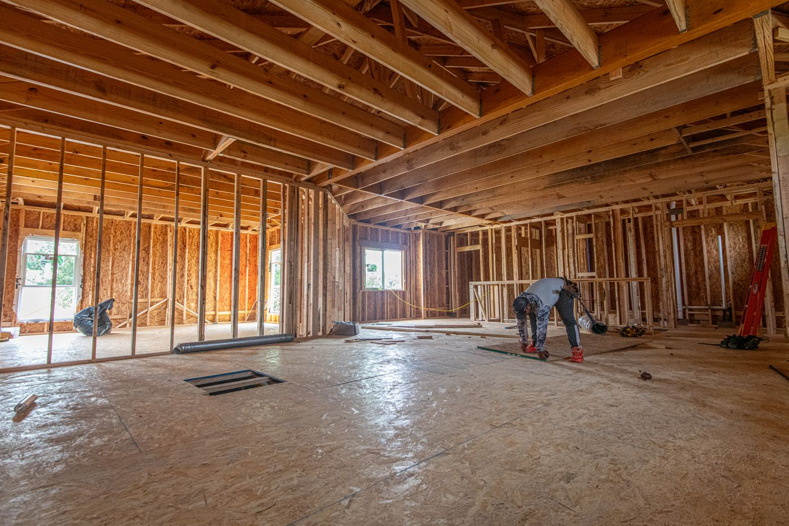

Quick answer: Choosing a renovation builder in Sydney requires different due diligence from choosing a new build builder. The core differences: renovation work is priced against unknown existing conditions, not a clean site; asbestos is present in most Sydney homes built before 1990; the approval path depends on whether you are staying within the existing footprint (Construction Certificate) or extending it (CDC or DA); and a fixed-price contract is only meaningful if the scope has been properly documented before signing. The questions you ask in the first meeting should be different, and the references you check should be renovation-specific, not new build.
Every renovation guide starts with “get three quotes.” This one starts earlier than that, because getting three quotes from three builders who have not properly assessed your existing structure is just three uncertain numbers rather than one uncertain number.
[Right. Straight face now.] This guide covers what makes renovation builder selection genuinely different from new build selection, which type of builder your project actually requires, how NSW approvals work for renovation work, and the two situations where renovation is the wrong tool for the job.
- Why renovation builder selection is different
- Which type of builder your project needs
- NSW approvals for renovation and extension work
- Asbestos in pre-1990 Sydney homes
- Getting the scope right before any quote
- Living in vs. vacating during the build
- Staged works vs. lump-sum contract
- References specific to renovation
- When renovation is the wrong answer
- FAQ
Why Renovation Builder Selection Is Different
A new build starts with a surveyed, cleared site and a set of approved drawings. Every element of the structure is known before construction begins. Costs can be fixed with reasonable confidence.
A renovation starts with a structure that may be 30, 50, or 80 years old, with unknown framing behind the plasterboard, services that have been modified without documentation, a slab that may or may not be adequate for additional load, and — in any Sydney home built before 1990 — asbestos in places nobody has opened up yet. None of these unknowns appear in the quote. All of them appear in the variation notices.
This is not a criticism of renovation builders. It is the nature of working within existing structures. The distinction matters for how you select and contract a builder: a builder who has extensive new build experience but limited renovation experience will be poorly equipped to estimate these risks accurately, manage them when they materialise, and price provisional sums that reflect what is genuinely unknown rather than what is conveniently optimistic.
When you ask for renovation references, ask specifically for projects involving works to existing structures — not new dwellings, not additions to newly built homes. The structural surprises, the service upgrades, the asbestos management, the sequencing around an occupied dwelling: these are what the renovation track record should demonstrate.
Which Type of Builder Your Project Needs
Photo via Pexels
Under $80,000 — licensed tradesperson with project coordination
A bathroom renovation, kitchen replacement, or single-room fitout under $80,000 typically does not require a licensed builder. It requires licensed tradespeople — plumber, electrician, tiler — and someone to coordinate them. This can be a building designer, a project manager, or the homeowner themselves. A licensed builder adds overhead that is not always justified at this scale. Confirm the specific work: if structural modifications are involved (even removing a single load-bearing wall), a licensed builder or at minimum a structural engineer is required regardless of budget.
$80,000–$300,000 — specialised renovation builder
Ground-floor extensions, first-floor bathroom additions, open-plan kitchen-living reworks, and facade upgrades in this budget range warrant a licensed builder who specialises in renovation work. Not a new build builder who “also does renovations.” The distinction is experience with existing structures — understanding how to sequence structural work around occupied spaces, how to price unknowns, and how to manage the approval process for works that touch the existing envelope.
Over $300,000 — custom builder with renovation track record
A full-house renovation, first-floor addition, or major extension at this scale involves structural engineering, DA or CDC approval, HBCF insurance requirements, and a complexity level that warrants a boutique custom builder with a documented renovation portfolio. The builder should be able to provide references from projects of comparable scope — not just comparable budget — within the last two years. At $300,000+, the line between renovation and partial knockdown-rebuild becomes worth examining. We cover that in the final section. For guidance on selecting the right builder at this level, see our guide on how to choose a custom home builder.
NSW Approvals for Renovation and Extension Work

Photo via Pexels
Which approval pathway applies to your renovation depends on what is being changed and whether the building’s footprint, height, or external form is being altered.
Construction Certificate (CC) — no DA required
Internal renovations that do not change the building footprint, alter the roof, or materially affect the external appearance typically require only a Construction Certificate from a private certifier. This covers kitchen renovations, bathroom fitouts, internal reconfigurations, and structural work within the existing envelope. No council involvement. No neighbour notification. CC assessment typically takes 5–15 business days.
Complying Development Certificate (CDC) — extensions and additions
Extensions to the ground floor or first-floor additions that comply with the Housing SEPP numerical standards — setbacks, height, site coverage, floor space ratio, landscaped area — can be approved via CDC by a private certifier in approximately 20 business days. No council involvement. This is the right path for a compliant single-storey rear extension or a second-storey addition on a standard suburban lot.
Development Application (DA) — when CDC is not available
DA is required when the site is in a heritage conservation area, when the design seeks variations from the prescribed standards (setbacks, height, FSR), or when the lot has overlays that exclude it from CDC. DA assessment is council-dependent. In most Western Sydney LGAs, residential DA timelines run 2–5 months. In Woollahra, Ku-ring-gai, and heritage-intensive North Shore councils, 6–18 months is realistic for heritage-affected DAs. Check your specific lot on the NSW Planning Portal before briefing a designer or builder.
For a broader overview of how approvals work across Sydney’s different councils, see our post on building a new home in Sydney, which covers CDC vs DA in detail across different LGAs.
Asbestos in Pre-1990 Sydney Homes
This is the section most renovation guides skip. It is the section most relevant to Sydney’s established housing stock.
Asbestos-containing materials were used extensively in Australian residential construction from the 1940s through to 1987, when their use in new construction was banned. The full prohibition on asbestos products in Australia came into effect in 2004. In practical terms, any Sydney home built before 1990 should be treated as potentially containing asbestos until an inspection confirms otherwise.
Common locations in Sydney homes: fibrous cement sheeting (eaves, wall linings, wet area walls), floor tiles and tile adhesives, roof gutters and downpipes, insulation around hot water systems and pipes, and textured ceiling coatings (artex or similar). Asbestos in good condition and not disturbed does not pose an immediate health risk. Disturbed asbestos — cut, drilled, sanded, or demolished without proper management — releases fibres that cause serious long-term respiratory disease.
What this means for renovation planning:
- Commission an asbestos assessment by a licensed assessor before any demolition or invasive work commences. This is a legal requirement in NSW for workplaces (which includes a construction site), and a practical necessity for any pre-1990 home regardless of legal status.
- Asbestos removal by a licensed removalist adds $3,000–$30,000+ to the project depending on quantity and type (bonded vs. friable). This must be in the budget before the renovation quote is finalised, not discovered during demolition.
- Ask any builder you are considering: “What is your process for managing potential asbestos in a pre-1990 home?” A builder who says “we’ll deal with it if we find it” is describing your money and your timeline, not theirs.
SafeWork NSW publishes current guidance on asbestos management requirements at safework.nsw.gov.au.
Getting the Scope Right Before Any Quote
The single biggest predictor of renovation cost overrun in Sydney is a quote based on a 30-minute site walk-through and a verbal description of the work. The builder walks through, nods thoughtfully, and produces a number. The number is whatever makes the job look attractive enough to win, not what the job will actually cost once walls are open and the structure is revealed.
A meaningful renovation quote requires documented scope. Before any builder provides a price, you should have:
- Floor plans and elevations showing existing and proposed conditions, prepared by a building designer or architect
- Demolition schedule identifying what is being removed, retained, and protected
- Structural notes from a structural engineer for any work affecting load-bearing elements
- Services assessment — a licensed electrician’s report and plumber’s assessment of the existing system condition if upgrading wet areas
- Asbestos assessment for any pre-1990 home, before demolition scope is finalised
- Written PC sum schedule — every item that cannot be fixed (tiles, appliances, joinery) listed as a specific provisional cost with a defined inclusion list
This documentation costs $5,000–$25,000 before a builder is engaged. It is the best money spent on a renovation. Without it, you are comparing different assumptions, not different prices. For guidance on how to select and work with designers through the documentation phase, see our post on what a design consultant does.
Living In vs. Vacating During the Build
Whether you stay or go during a renovation affects the timeline, the cost, and the quality of life for everyone involved — you and the tradies.
For targeted works — a single bathroom, a kitchen replacement, a rear extension that does not require structural disruption to the main living areas — living in during construction is feasible with proper staging. The builder seals the work zone from the living areas, agrees on work hours, and sequences trades to minimise disruption. Expect noise, dust, and trade access from 7am weekdays.
For whole-house renovations, first-floor additions involving roof removal, or any structural work requiring the main living areas to be non-functional, vacating is the more practical and often faster option. Construction sites without occupant constraints allow earlier starts, more flexible staging, and faster trade sequencing. The cost of temporary accommodation — typically $2,000–$6,000 per month for a Sydney rental — should be factored into the total project budget from the start. Projects where occupants stay during whole-house renovations typically run 20–35% longer than equivalent vacant-site renovations.
Staged Works vs. Lump-Sum Contract
Renovation contracts take two common forms, and the difference matters for how financial risk is distributed between you and the builder.
Lump-sum (fixed-price) contract: The builder agrees to complete a defined scope for a fixed price. Variations from the agreed scope are priced separately as formal variation notices. This is the preferred structure when the scope is fully documented before contract signing. The fixed price is only as reliable as the scope is complete — a thin scope with large provisional sums is effectively a cost-plus job with a headline number attached to it.
Staged works contract: Work is broken into defined stages (demolition, structural, fitout, finishes), with each stage priced and approved before the next commences. This structure suits renovations where the existing conditions cannot be fully assessed until work begins — for example, where asbestos removal scope or structural remediation requirements depend on what is found behind walls. Staged contracts provide better cost control in genuinely uncertain conditions but require active client involvement at each stage transition.
For complex renovation work on established Sydney homes, a hybrid approach — lump-sum for the documented scope with formal provisional sums for defined unknowns — is often the most appropriate structure. The key is that every provisional sum has a written description of what it covers, what the trigger for variation is, and how the variation will be priced. For detailed guidance on reading building contracts, our post on builder quotes in Sydney covers the clauses that matter most.
References Specific to Renovation
When you request references from a renovation builder, ask specifically: “Can you provide two contacts from renovation or extension projects you completed in the last 18 months on a home of similar age to mine?”
When you speak with those references, the renovation-specific questions:
- Were there significant variations from the original quote? What caused them?
- How did the builder handle discoveries behind walls — rotted framing, substandard electrical, unexpected structural conditions?
- Was the asbestos situation identified and managed before demolition commenced, or discovered during works?
- If you lived in during the renovation, was the site management respectful of occupation? Were work hours adhered to?
- Would you use this builder again for a renovation specifically — not just any builder?
A builder who redirects you to new build references when asked for renovation references is telling you something about their track record. New build experience does not transfer automatically to renovation competence.
When Renovation Is the Wrong Answer
This section is the one most renovation guides skip entirely. We are not most guides.
When the renovation cost exceeds 60–70% of a new build. Once you are spending more than two-thirds of what a new home would cost, you are preserving an old structure at significant expense rather than building a new one optimised for your brief. Run the comparison before committing to either path.
When the existing structure contains significant asbestos, substandard electrical, or structural deficiencies. The cost of remediation — asbestos removal, full rewiring, foundation underpinning — often approaches or exceeds the incremental cost of demolition and rebuild. Pre-1970s Sydney homes on slabs or with original wiring and lead plumbing are particularly likely candidates for this analysis.
When the existing floor plan cannot deliver the brief without major structural intervention. Chasing a brief across an existing plan that fundamentally does not suit it — moving load-bearing walls, raising ceiling heights, relocating stairwells — adds structural complexity and cost without producing the layout clarity of a purpose-designed new home. If the brief requires substantial reconfiguration of the existing structure, a knockdown rebuild deserves serious evaluation.
When the block qualifies for dual occupancy. If your lot is R2-zoned and meets the minimum area and frontage for dual occupancy under the NSW Housing SEPP, demolishing and building two dwellings may produce a significantly better financial outcome than renovating one. Run the feasibility before briefing any builder or designer. Our detailed guide on duplex builders in Sydney covers the financial analysis behind that decision.
FAQ
Do I need a DA or CDC to renovate my home in Sydney?
Internal renovations that do not change the building footprint or external appearance require only a Construction Certificate from a private certifier — no DA. Extensions that comply with the Housing SEPP standards qualify for CDC approval in approximately 20 business days. DA is required when the site is in a heritage conservation area, when the design seeks variations from prescribed standards, or when overlays exclude the site from CDC. Check your specific lot on the NSW Planning Portal.
How is choosing a renovation builder different from choosing a new build builder?
Renovation work introduces variables a new build does not: unknown structural conditions behind existing walls, existing services that may need upgrading, asbestos in pre-1990 homes, party wall obligations, and trade sequencing around an occupied dwelling. A builder with new build experience but limited renovation experience will be poorly equipped to estimate these risks, manage them when they materialise, or price provisional sums accurately. Ask for renovation-specific references — projects on existing structures — not new build references.
Does my builder need HBCF insurance for a renovation?
Yes. NSW law requires builders to hold HBCF insurance for any residential contract over $20,000, including renovation and extension work. Request the current eligibility certificate before signing. For renovation contracts approaching or exceeding $500,000, verify the builder’s HBCF limit covers your contract value.
What should be in a renovation quote before I sign?
A meaningful renovation quote requires documented scope: floor plans and elevations, a demolition schedule, structural notes, a services assessment, an asbestos assessment for pre-1990 homes, and a written provisional cost schedule for every item that cannot be fixed before signing. A quote based on a site walk-through and verbal description is a starting number with adjustments to come, not a fixed price.
Should I live in my home during a renovation or vacate?
For targeted single-area works, living in is often feasible with proper staging. For whole-house renovations, first-floor additions, or structural works requiring main living areas to be non-functional, vacating is the faster and more practical option. Projects where occupants stay during whole-house renovations typically run 20–35% longer than equivalent vacant-site projects. Budget $2,000–$6,000 per month for temporary accommodation in Sydney.
When does knockdown rebuild make more financial sense than renovation?
When renovation cost exceeds 60–70% of a new build; when the existing structure contains significant asbestos, substandard services, or structural deficiencies requiring costly remediation; when the brief requires major reconfiguration that a purpose-designed new home would deliver more cleanly; or when the block qualifies for dual occupancy and the development outcome substantially exceeds the renovated single dwelling’s value.